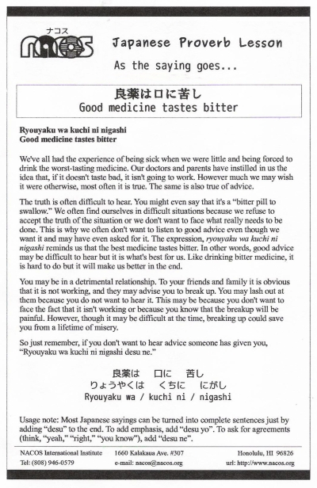

Ryouyaku wa kuchi ni nigashi
Good medicine tastes bitter
We've all had the experience of being sick when we were little and being forced to drink the worst-tasting medicine. Our doctors and parents have instilled in us the idea that, if it doesn't taste bad, it isn't going to work. However much we may wish it were otherwise, most often it is true. The same is also true of advice.
The truth is often difficult to hear. You might even say that it's a “bitter pill to swallow.” We often find ourselves in difficult situations because we refuse to accept the truth of the situation or we don't want to face what really needs to be done. This is why we often don't want to listen to good advice even though we want it and may have even asked for it. The expression, ryouyaku wa kuchi ni nigashi reminds us that the best medicine tastes bitter. In other words, good advice may be difficult to hear but it is what's best for us. Like drinking bitter medicine, it is hard to do but it will make us better in the end.
You may be in a detrimental relationship. To your friends and family it is obvious that it is not working, and they may advise you to break up. You may lash out at them because you do not want to hear it. This may be because you don't want to face the fact that it isn't working or because you know that the breakup will be painful. However, though it may be difficult at the time, breaking up could save you from a lifetime of misery.
So just remember, if you don't want to hear advice someone has given you, “Ryouyaku wa kuchi ni nigashi desu ne.”
Usage note: Most Japanese sayings can be turned into complete sentences just by adding “desu” to the end. To add emphasis, add “desu yo”. To ask for agreements (think, “yeah,” “right,” “you know”), add “desu ne”.

| © 1995-2013 NACOS International Institute. All Rights Reserved. |